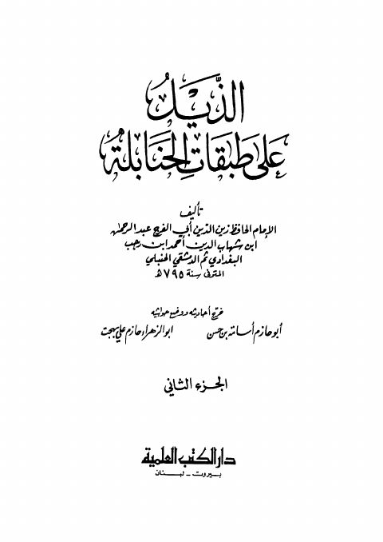

Downloads need an internet connection.
كتاب الذيل على طبقات الحنابلة لابن رجب
Authors: ابن رجب الحنبلي
Editors: أبو حازم أسامة بن حسن أبو الزهراء حازم علي بهجت
Publishers: دار الكتب العلمية
**▫️ العنوان: كتاب الذيل على طبقات الحنابلة لابن رجب** ▪️ المؤلف: #عبد_الرحمن_بن_أحمد_بن_رجب_الحنبلي ▫️ المحقق: #أبو_حازم_أسامة_بن_حسن • #أبو_الزهراء_حازم_علي_بهجت ▪️ الناشر: #دار_الكتب_العلمية ▫️ تاريخ النشر: 1417هـ 1997م ▪️ بلد النشر: بيروت، #لبنان ▫️ الطبعة: 1 ▪️ عدد الأجزاء: ج2 ▫️ الصفحات: 402 ▪️ نوع الوعاء: #كتاب ▫️ التصنيف الرئيسي: #التراجم_والأعلام ۪